Nestorpack
Desktop version of the Nestorpack
The desktop version of the Nestorpack printing company website aims to improve the process of ordering packaging. The main goals are to add 2D and 3D visualization features, so customers can preview the products they order before finalizing their purchase.
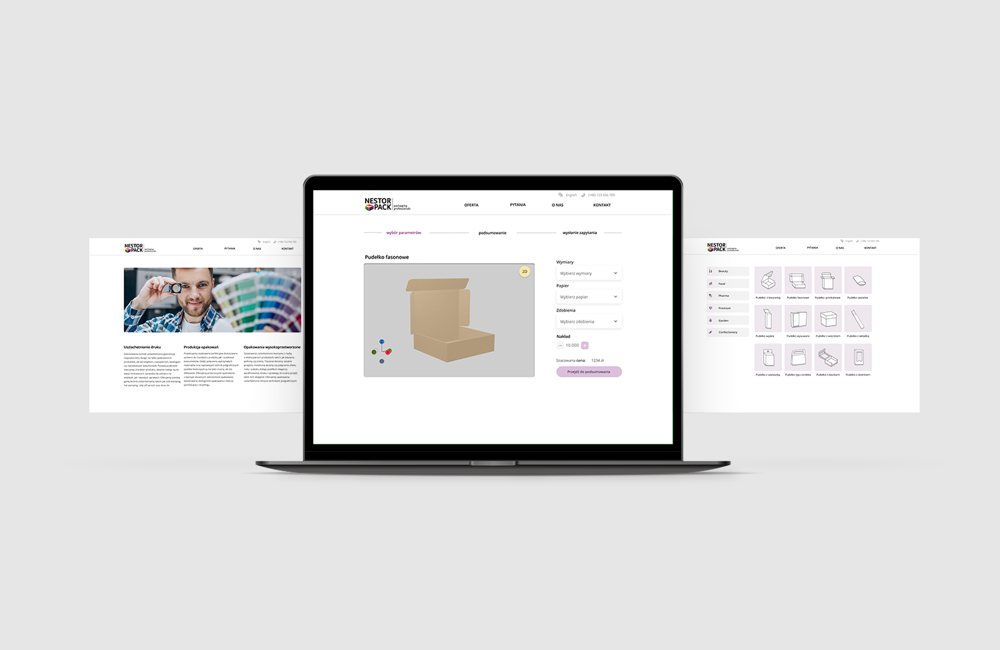
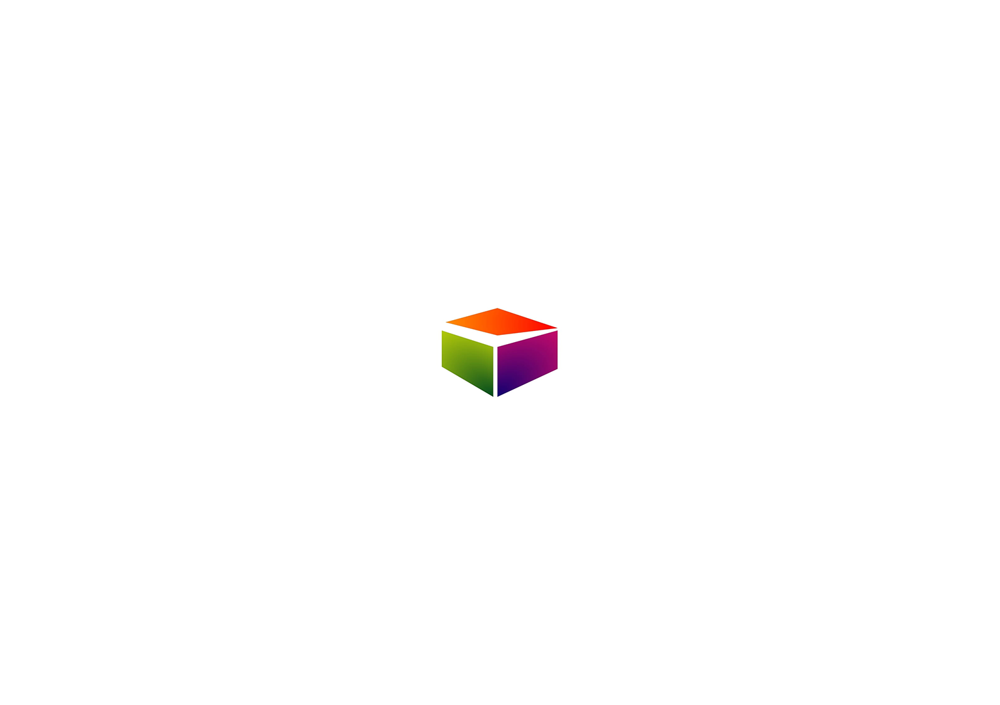
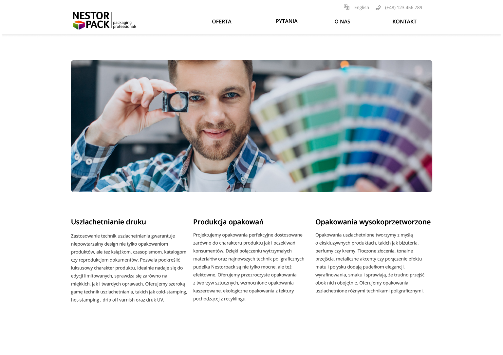
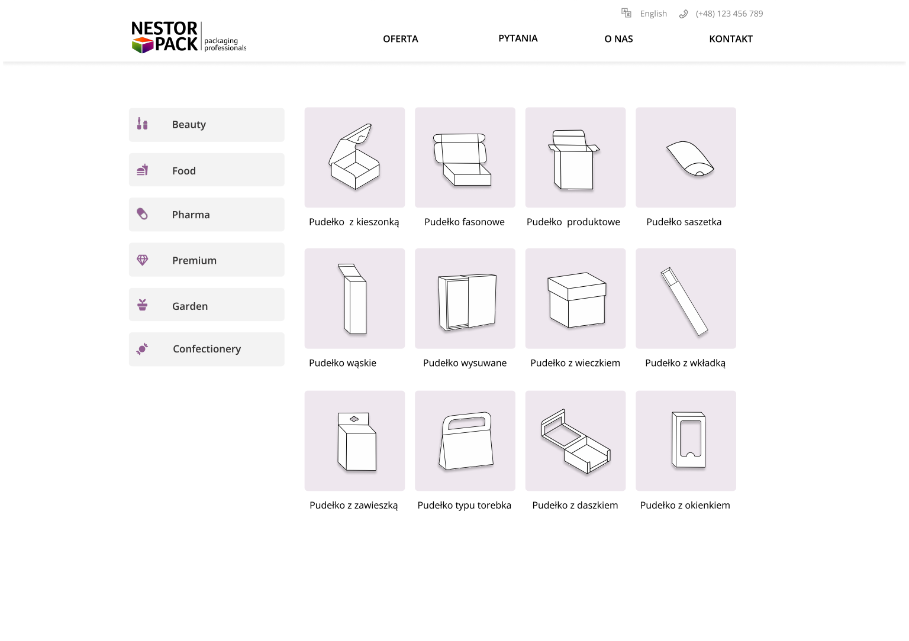
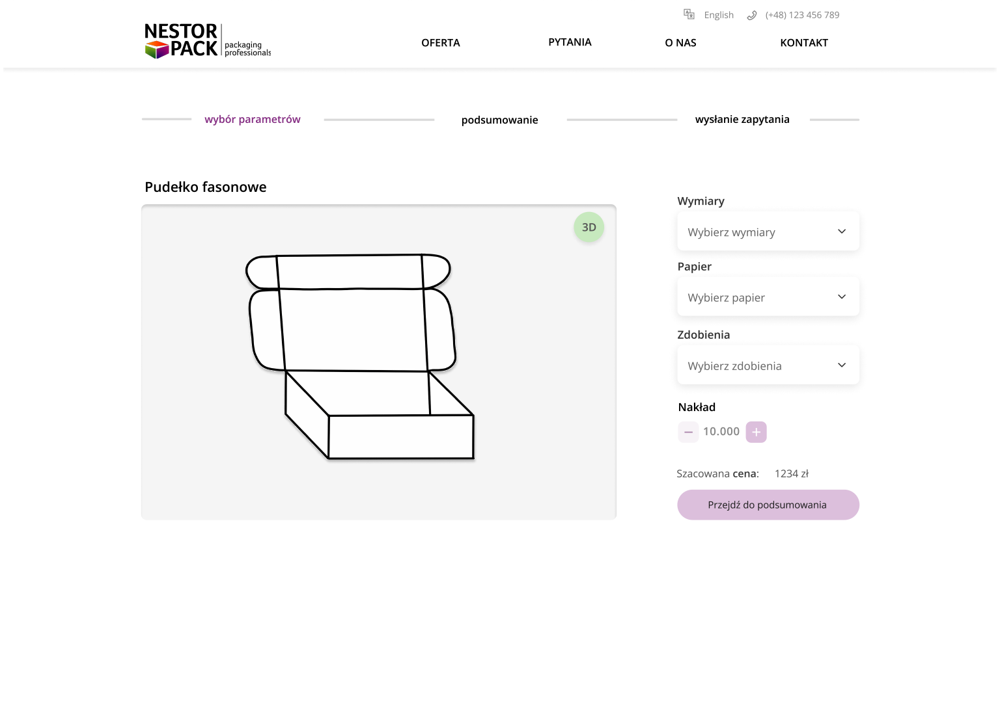
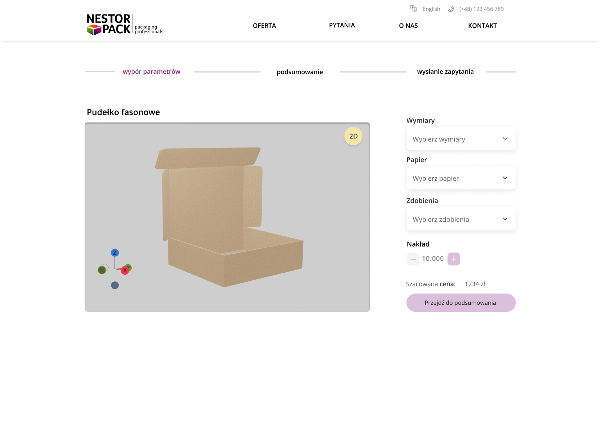
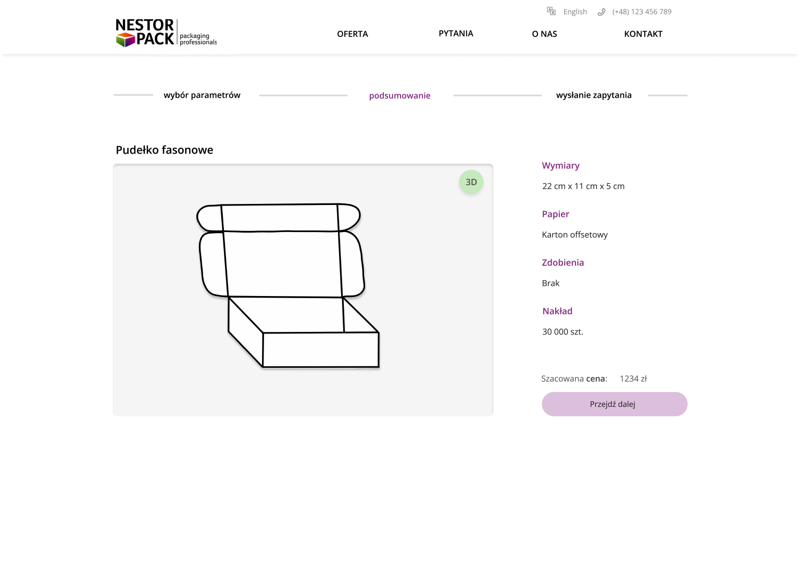
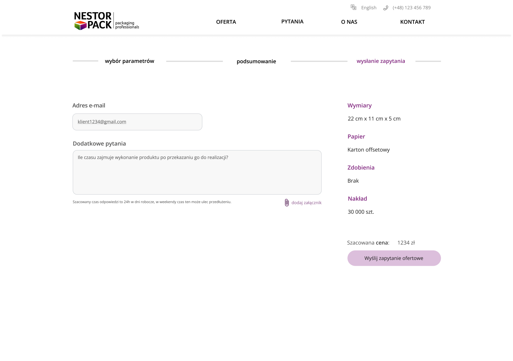
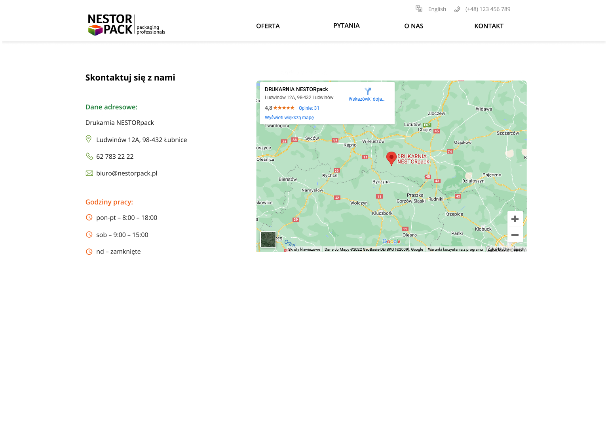
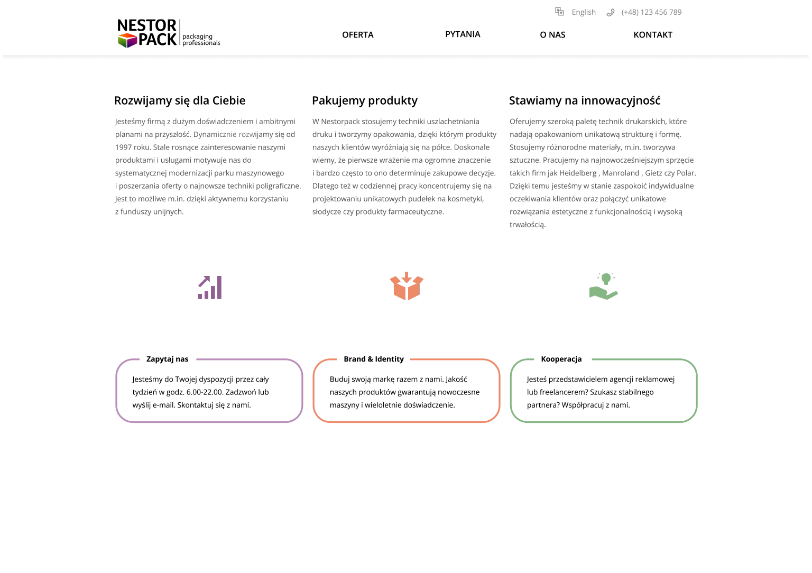
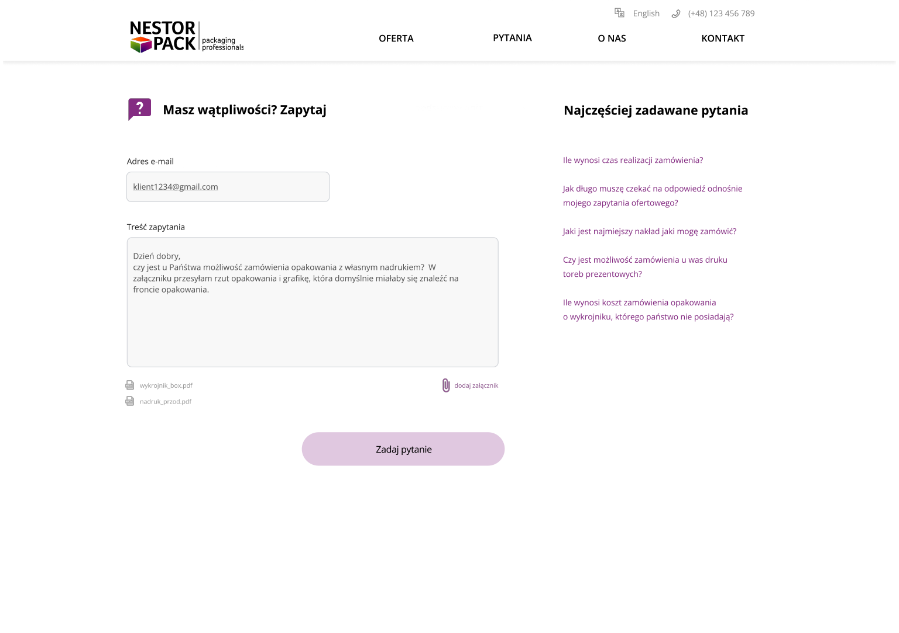

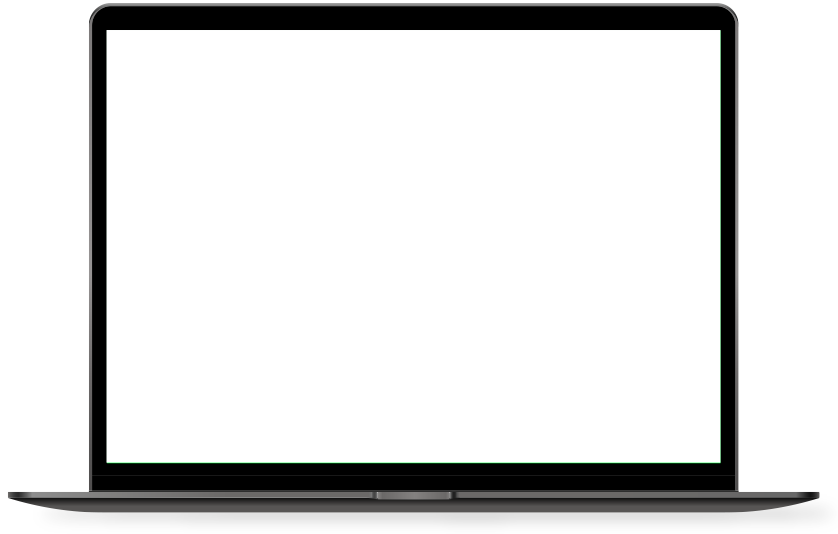